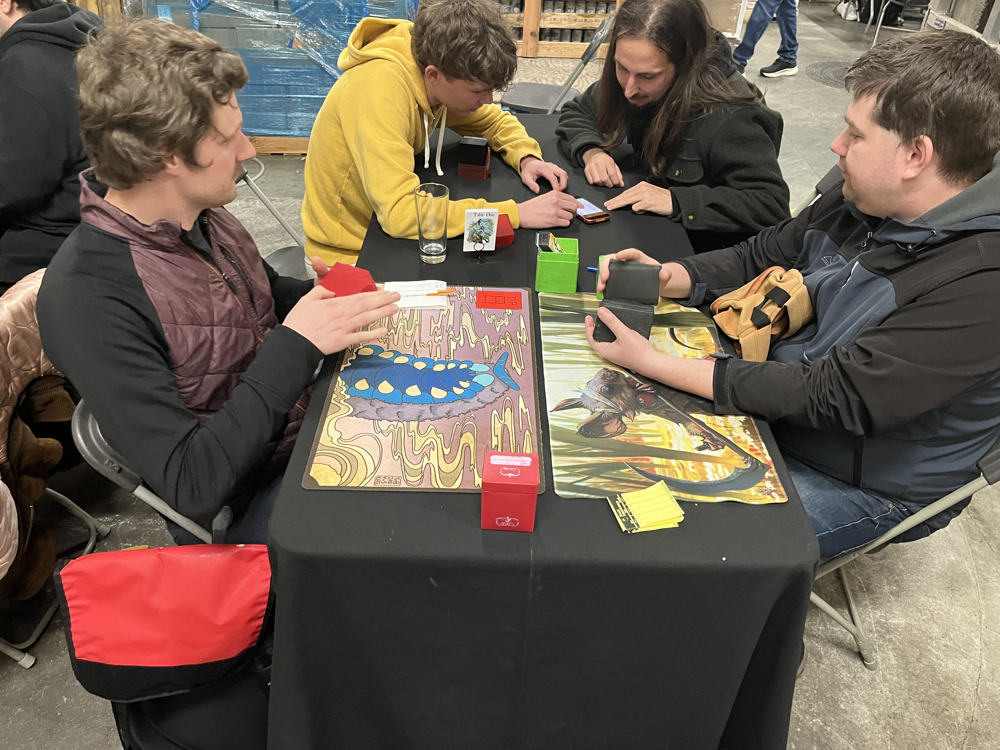
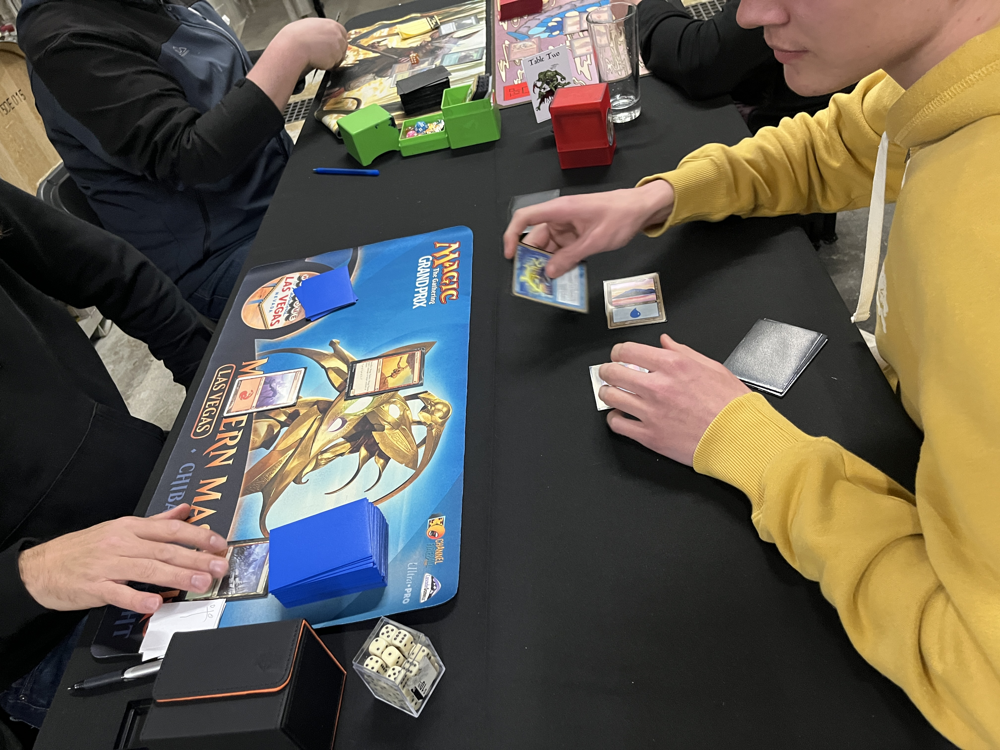
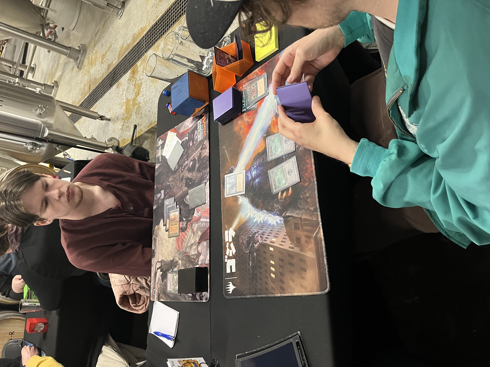
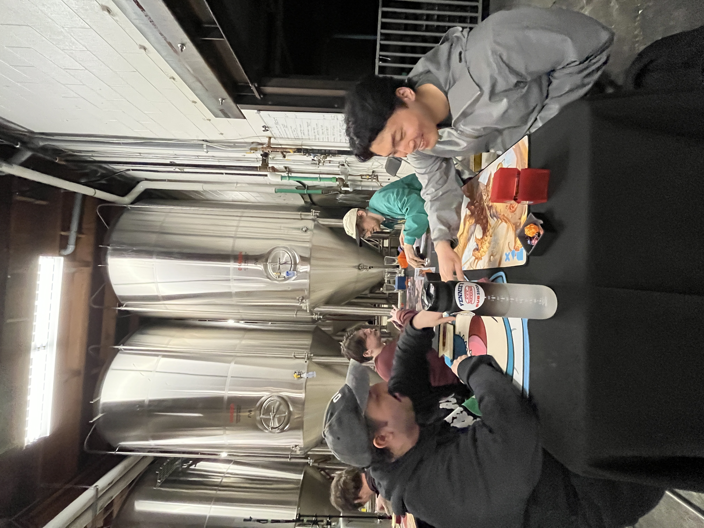
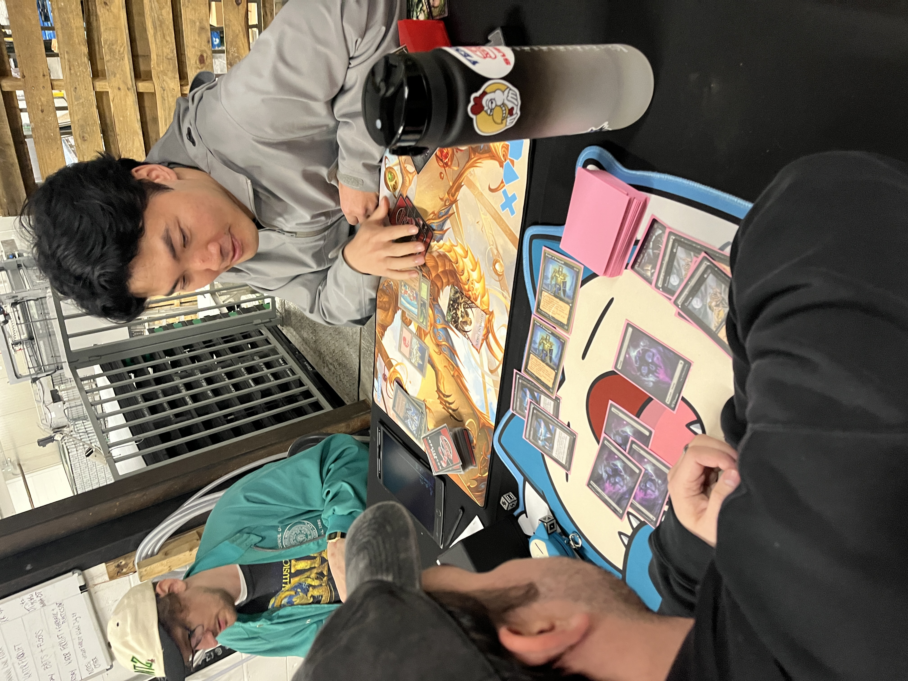
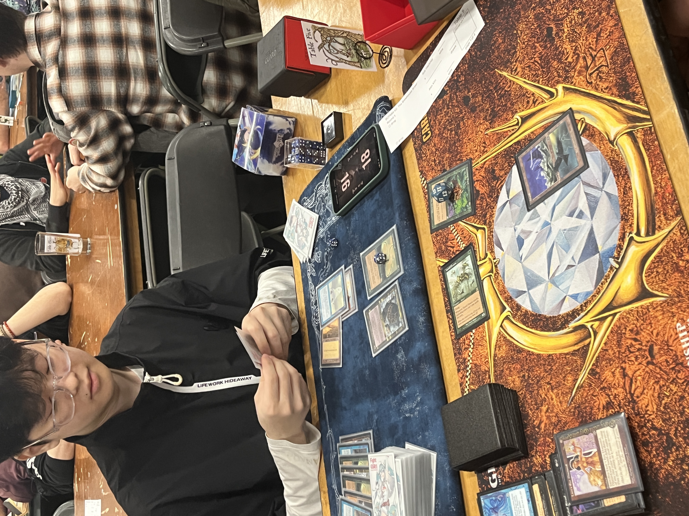
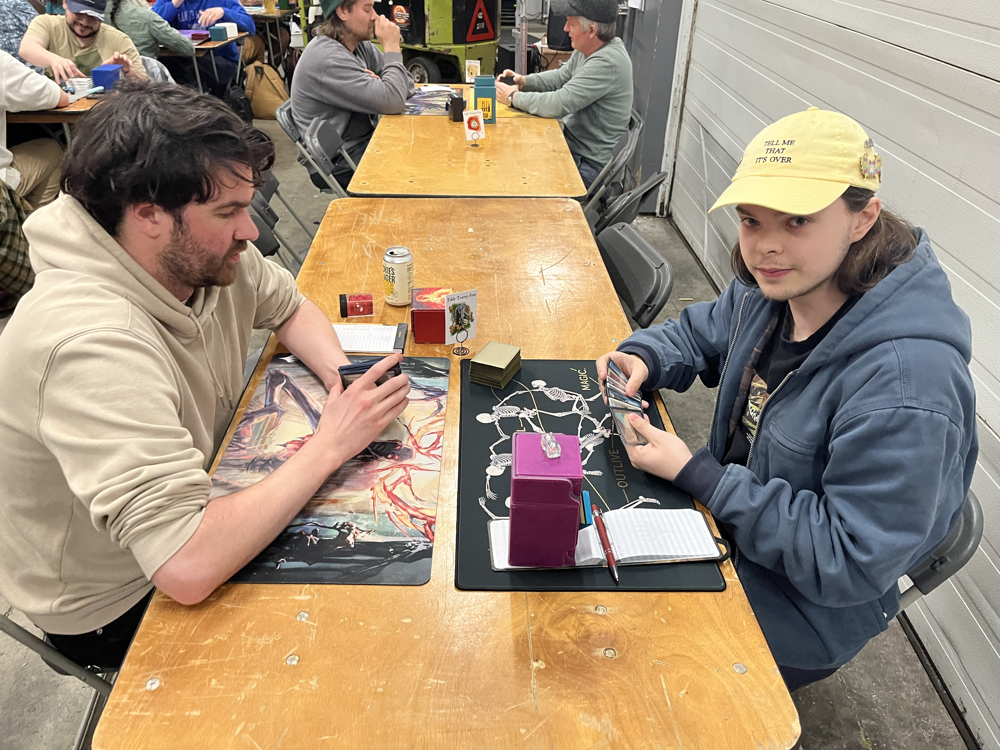
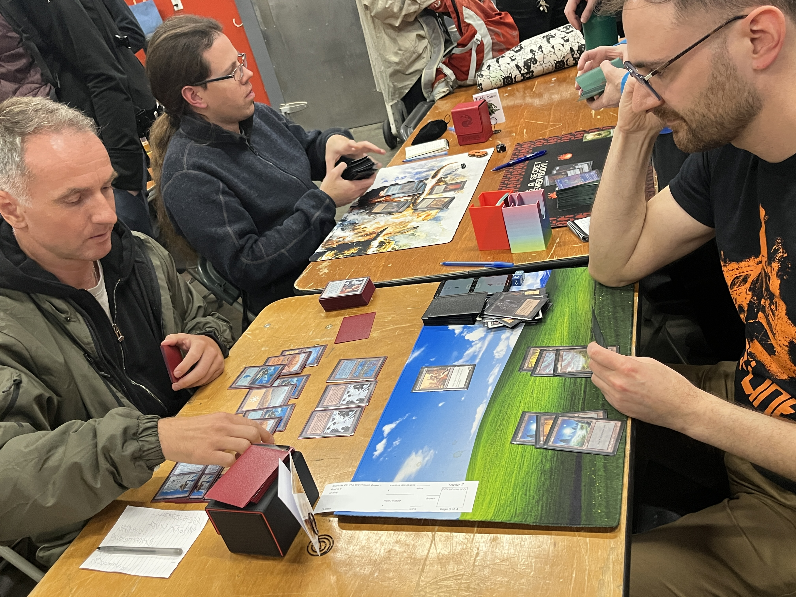
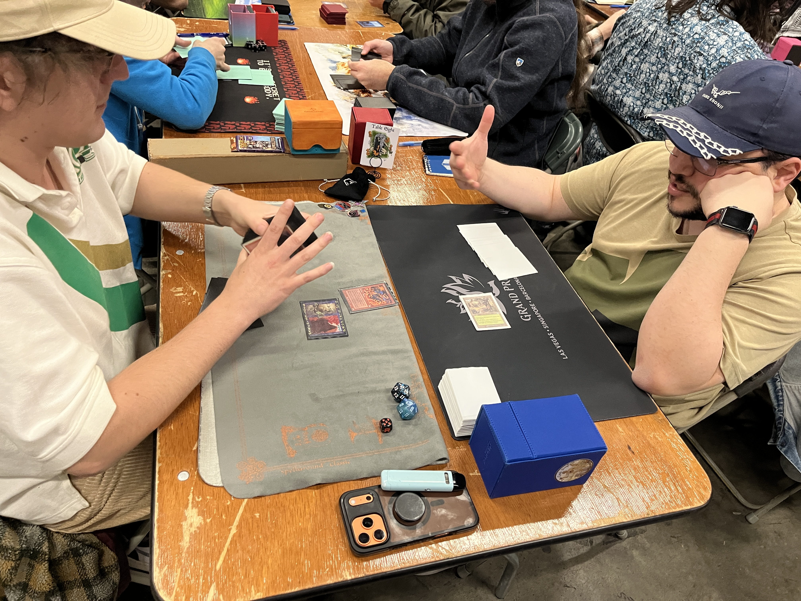

Typically, Swiss-format tournaments have their rounds scaled to ensure players with 1 loss make the Top 8. Typically, 33–64 players recommends 6 rounds. Today, with 47, we're running 5. Partly due to time constraints, partly as an artificial restraint on intentional and unintentional draws, maximizing action right into the final round. In the end, only a single X–1 player would miss, suggesting that "the sweet spot" for Swiss round thresholds might be higher than conventional wisdom suggests.
Table 1 — Colin Whitwell (TerraGeddon) vs Alastair McLellan (Goblins)
Table 1 decided to draw, locking up 2 slots in the Top 8. That left at least 7 tables "live" for the remaining spots.
Table 2 — Andrew Kidston (Nought) vs Dustin Fennell (Goblins)

The third 4–0 — Andrew Kidston (Nought) — was paired down against Dustin Fennell (Goblins), who'd just lost the previous round. Kidston, based on his tiebreaks, was almost certainly in even with a loss. But he wasn't willing to concede, meaning Fennell was in control of his own destiny for his Top 8 slot. In the end, Kidston knocked him out to guarantee himself the 1st seed in Top 8, leaving 5 spots remaining.
Table 3 — Andrew Van Tunen (Moneyball Black) vs William Niwinski (B/W Control)

Table 3 saw Andrew Van Tunen (Moneyball Black) facing off against William Niwinski (B/W Control), a Pauper-regular who'd been rattling off wins from 1–1, with a deadly "Napster-style" (iPod Shuffle?) Enlightened-Tutor-based sideboard package. Niwinski edges it out.
Table 4 — Markus Thibeau (Moneyball Black) vs Ed Yueh (Elves)


Thibeau wins 2–0.
Table 5 — Rob Hackney (Iggy Pop) vs Alex Kim (Gro-a-Tog)

Kim is a skilled local player, gradually moving up the local BCPMM Elo rankings. He loses the first one quickly, but by the time I walk over seems to have the upper hand in Game 2. Hackney's already successfully fired off a Necrologia for 10. A Gaea's Blessing sits at the top of his graveyard, indicating that if Hackney doesn't have an answer, his Brain Freezes won't be enough to get the job done. But Hackney successfully changes gears, and Cunning Wishes for a Hunting Pack, which he fires off for 19. Kim concedes, lamenting that he tipped his hand too soon. Hackney wins 2–0.
Table 6 — Chad Galpin (Reanimator) vs Spencer Shaw-Jaworek (U/W Control)

Table 6 features Chad Galpin (Reanimator) against Spencer Shaw-Jaworek (U/W Control), who settle themselves away from the fray. Shaw-Jaworek's build, which seems to have most of the rest of the metagame covered, struggles against this obscure matchup. Galpin wins 2–0.
Table 7 — Aeolius Alevizakis (U/W Control) vs Reilly Wood (Moneyball Black)

Table 7 has Aeolius Alevizakis (also on U/W Control) against Reilly Wood (Moneyball Black). After a Round 1 loss to Thibeau, Alevizakis climbed his way back, eking out every sliver of value. The turning point in this match is when Alevizakis animates Faerie Conclave and — in response to Wood's Smother — casts a Teferi's Response for a 3-for-1.
But all day, Aeo had been complaining that his build lacked win conditions. He had to go all the way down to 1 life, 1 card in deck before his creature-lands could close out the game.
Aeo 2–0.
Table 8 — Dakota Blais (Burn) vs Marvin Gonçalves de Aquino (Aluren)

Table 8 has Dakota Blais (Burn) overcoming a pair-down against Grand Raffle winner Marvin Gonçalves de Aquino (Aluren). Unfortunately, Blais had the lowest tiebreaks among the 4–1s and had to settle for 9th–12th.